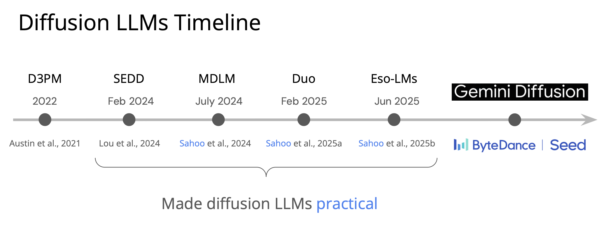

This thesis lays the key foundations for the recent success of Diffusion Language Models.

BibTeX
@phdthesis{
sahoothesis,
author={Sahoo,Subham S.},
year={2026},
title={Foundations of Diffusion Language Models},
journal={ProQuest Dissertations and Theses},
pages={258},
note={Copyright - Database copyright ProQuest LLC; ProQuest does not claim copyright in the individual underlying works; Last updated - 2026-06-23},
abstract={Diffusion models have recently emerged as a powerful alternative to autoregressive (AR) models for generative modeling, with strong results in continuous domains such as images and video. In the discrete setting of language, however, diffusion models still lag behind AR approaches in both likelihood and sampling efficiency. This thesis investigates the foundations of diffusion language models and asks whether they can be made competitive with traditional AR language models. First, we revisit the role of the forward noising process. Contrary to the prevailing theory that likelihood is invariant to the noise schedule, we prove that this invariance holds only for univariate schedules. We introduce context-adaptive, multivariate noise processes that are learned from data and show that they strictly improve likelihood and sample quality. Second, we propose a simple and unified framework for discrete diffusion that encompasses masked and Uniform-state processes. Within this framework, we derive Rao–Blackwellized variational bounds that are tighter and exhibit lower variance than existing ELBO formulations. Using these bounds, our MDLM models achieve state-of-the-art diffusion perplexities, approach AR perplexities on standard language benchmarks, and surpass AR models on several likelihood evaluations, while enabling efficient conversion of BERT-style encoders into generative models. Third, we establish a discrete–continuous duality that links Uniform-state diffusion in discrete space with Gaussian diffusion in continuous space. This connection allows us to transfer efficient parameterizations, improved training objectives, and distillation-based fast samplers to the discrete domain. Leveraging this, we obtain a twofold speedup in training convergence and two orders of magnitude faster sampling, and we introduce the first few-step discrete diffusion samplers via discrete consistency distillation. Collectively, these contributions show that diffusion language models can substantially close the gap to AR models in both quality and speed, while providing a principled foundation for future advances in discrete diffusion, fast sampling, and controllable language generation.},
keywords={Diffusion language models; Diffusion models; Discrete diffusion; Autoregressive models; Computer science; Computer engineering; Applied mathematics; Artificial intelligence; 0364:Applied Mathematics; 0984:Computer science; 0464:Computer Engineering; 0800:Artificial intelligence},
isbn={9798252441955},
language={English},
url={https://www.proquest.com/dissertations-theses/foundations-diffusion-language-models/docview/3355013570/se-2},
school={Cornell University}
}